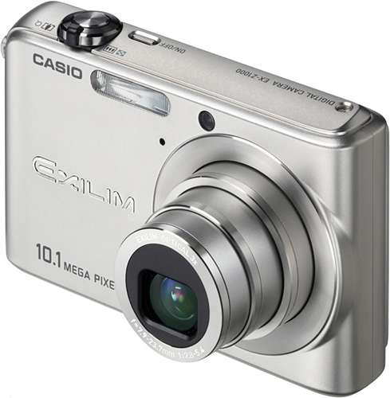

Let’s spend some more time on the scanner but the scanner hardware from the point of view of an OCR user. The major element is not the quality and price of a scanner but the scanner type.
Flatbed scanners are the most common type. They resemble copy machines: as we described in the previous page, the scanned document is placed on the scanner’s glass plate and the scan head under the platen moves across the document. Flatbed scanners are very versatile because they can be used to scan books and bulky material! Flatbed scanners are the standard scanner you’ll find in a “SOHO” context, where people scan a few documents per day.
It takes a scanner with a document feeder (ADF) to scan large volumes of documents comfortably, that is without having to place them individually on the glass plate. Some scanners can optionally be equipped with an “add-on” document feeder for say, up to 50 pages; the faster models come with an in-built feeder that can hold up to, say, 100 pages.
True high-speed document scanners are popular in professional contexts where vast amounts of volumes get processed daily. Here, you’ll dispose of a document feeder that holds up to 500 pages! In such applications, the presence of scanning operators is required to dematerialize the documents; afterwards, “batch OCR” may get done on the scans.
Sheetfed scanners, very popular halfway the 90s, are often the cheaper version of a flatbed scanner. This scanner type uses another transport mechanism: the sensor array — often a contact image sensor (“CIS”) — is immobile and the page moves across it.
As these machines — at least the office versions of them — look a lot like a fax machine or laser printer, they can only scan single, loose pages, not bound material. (The sheetfed scanners for home and portable use only scan a single sheet at a time, the office models are equipped with a built-in document feeder.) Another reason makes them less appropriate for graphic applications: the image quality is not always optimal! The scans are less exact: moving the page across the sensors introduces distortions in the image.
Their footprint is relatively small, and they’re often used on laptops or placed on a crowded desk to scan limited amounts of paperwork.
In recent years, a spin on sheetfed scanners has brought new attention to this category of scanners: some sheetfed scanners are now not just portable but may even be wireless. You scan documents in “stand-alone” mode and save the images on the scanner’s flash memory, then connect the scanner to a PC with a USB cable, put the images on a memory card, say, an SD card… or execute a wireless transfer by Wi-Fi. A highy practical solution for traveling salesmen, people visiting booths at exhibitions and the likes!
I’ll call these models mobile scanners or portable scanners for lack of a better term. Obviously, only the smallest sheetfed scanners can be made mobile in the first place!
You can slide these scanners over book pages and magazine articles. To process higher volumes of bound material, book scanners offer a practical solution. (Google developed a custom solution for its abandoned book-scanning project, Google Books.)
Business card scanners, largely unknown to the general public, have an even smaller footprint than mobile scanners. These dedicated scanners were designed to scan business cards and have many advantages over other scanner types when it comes to scanning business cards: they hardly take up any space on your desk, swiftly cope with business cards of varying paper and printing qualities and you never have to wonder about selecting the correct card format.
This hardware is used for a specific type of OCR application — the recognition of business cards. More, much more, about business card reading (“BCR”) later!
Pen scanners are an entirely unique type of scanner: these pen-sized OCR tools capture only a single line of text per scan. Pen scanners offer instantaneous text retrieval at your fingertips: slide the pen scanner over a line of text and the recognized data gets inserted in the active application as soon as you lift the pen away from the paper. Pen scanners interface with any application — word processor, database, spreadsheet etc. — by inserting text at the current cursor position.
These OCR scanners capture text snippets: they copy excerpts from books, magazines, newspapers and typed or printed matter directly in your word processor. Encode checks, invoices, bank statements in your book-keeping software. Or rule the pen over your visitor’s business card to put him in your personal organizer or to note the next meeting in your electronic agenda. Here too: more about pen scanners later!
And then there’s the recent novelty called mouse scanner. Turn one over and you quickly see how an optical mouse can become a scanner — by making the glass plate and the surface getting filmed by the optoelectronic camera much, much bigger. Even then, you wipe the mouse scanner back and forth across the document to be scanned, kind of the way you wash a window. A sophisticated algorithm stitches the scanned bits together to form a coherent image. A pen scanner does something similar, so we’ll come back to both simultaneously.
Scanners can be built into multifunctional peripherals (“MFPs”) or “all-in-one” devices: such versatile and popular hardware reduces the clutter on your desk by combining a printer with a scanner and possibly a fax machine! The scanner integrated in these hybrid machines can be both a flatbed and a sheetfed scanner.
And then there are the latest types of “scanners”: digital cameras and digital copiers. Digital cameras were designed to take pictures, but now that these photo cameras have gone “high-res”, you can recognize the snapshots you take of paper documents. And — how can we avoid mentioning it? — cell phones come with a built-in camera. The “eyes” watching you from the front and back of your smartphone are not the computer HAL from “2001: A Space Odyssey”, Dave!

Smartphone apps such as doo Scanbot, Readdle Scanner Pro and Adobe Scan automatically crop and optimize the scanned image. These apps adjust the image: the perspective is corrected to straighten the image, the text gets sharpened, blurred areas are corrected etc. Handy when you quickly want to scan a magazine article in a library or a receipt you need to include in your expense report!
Digital copiers, finally, are the newest type of office “scanner”. The major manufacturers of copiers now offer scanning as an extra feature for their networked digital copiers. These machines offer a fast way of scanning large volumes of documents in the office.
Some minor scanner types are slide scanners, photo scanners and drum scanners. As these machines are not appropriate for document scanning, we won’t bother with them here.